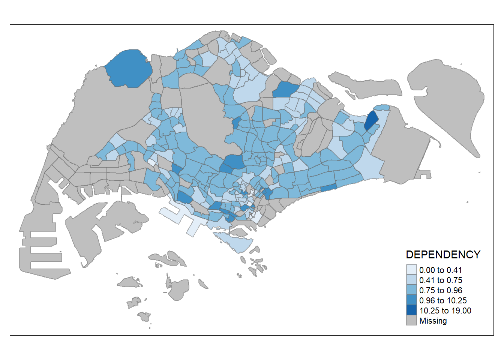
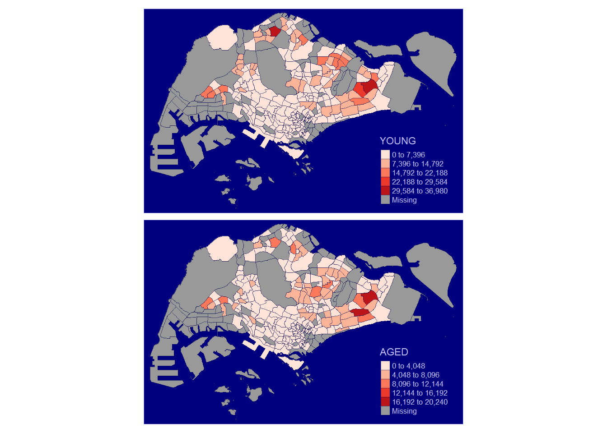

pacman::p_load(sf, tidyverse, Hmisc, urbnthemes, tmap, kableExtra)Hands-on Ex 01
Geospatial Data Wrangling
Installing R packages
Importing Geospatial Data
mpsz <- sf::st_read(
dsn = "data/geospatial",
layer = "MP14_SUBZONE_WEB_PL"
)Reading layer `MP14_SUBZONE_WEB_PL' from data source
`C:\haileycsy\ISSS624-AGA\Hands-on_Ex\hoe1\data\geospatial'
using driver `ESRI Shapefile'
Simple feature collection with 323 features and 15 fields
Geometry type: MULTIPOLYGON
Dimension: XY
Bounding box: xmin: 2667.538 ymin: 15748.72 xmax: 56396.44 ymax: 50256.33
Projected CRS: SVY21st_read() reveals that the geospatial objects are multipolygon features. There are a total of 323 multipolygon features and 15 fields in the mpsz simple feature data frame
cyclingpath <- sf::st_read(
dsn = "data/geospatial",
layer = "CyclingPathGazette"
)Reading layer `CyclingPathGazette' from data source
`C:\haileycsy\ISSS624-AGA\Hands-on_Ex\hoe1\data\geospatial'
using driver `ESRI Shapefile'
Simple feature collection with 2558 features and 2 fields
Geometry type: MULTILINESTRING
Dimension: XY
Bounding box: xmin: 11854.32 ymin: 28347.98 xmax: 42626.09 ymax: 48948.15
Projected CRS: SVY21There are a total of 2558 features and 2 fields in cyclingpath linestring feature data frame and it is in svy21 projected coordinates system
preschool <- sf::st_read(
"data/geospatial/PreSchoolsLocation.kml")Reading layer `PRESCHOOLS_LOCATION' from data source
`C:\haileycsy\ISSS624-AGA\Hands-on_Ex\hoe1\data\geospatial\PreSchoolsLocation.kml'
using driver `KML'
Simple feature collection with 2290 features and 2 fields
Geometry type: POINT
Dimension: XYZ
Bounding box: xmin: 103.6878 ymin: 1.247759 xmax: 103.9897 ymax: 1.462134
z_range: zmin: 0 zmax: 0
Geodetic CRS: WGS 84This reveals that preschool is a point feature data frame. There are a total of 2290 features and 2 fields and is in wgs84 coordinates system.
What is the Content of A Simple Feature Data Frame?
st_geometry(mpsz)Geometry set for 323 features
Geometry type: MULTIPOLYGON
Dimension: XY
Bounding box: xmin: 2667.538 ymin: 15748.72 xmax: 56396.44 ymax: 50256.33
Projected CRS: SVY21
First 5 geometries:MULTIPOLYGON (((31495.56 30140.01, 31980.96 296...MULTIPOLYGON (((29092.28 30021.89, 29119.64 300...MULTIPOLYGON (((29932.33 29879.12, 29947.32 298...MULTIPOLYGON (((27131.28 30059.73, 27088.33 297...MULTIPOLYGON (((26451.03 30396.46, 26440.47 303...This gives more information about the associated attributes in the data frame:
glimpse(mpsz)Rows: 323
Columns: 16
$ OBJECTID <int> 1, 2, 3, 4, 5, 6, 7, 8, 9, 10, 11, 12, 13, 14, 15, 16, 17, …
$ SUBZONE_NO <int> 1, 1, 3, 8, 3, 7, 9, 2, 13, 7, 12, 6, 1, 5, 1, 1, 3, 2, 2, …
$ SUBZONE_N <chr> "MARINA SOUTH", "PEARL'S HILL", "BOAT QUAY", "HENDERSON HIL…
$ SUBZONE_C <chr> "MSSZ01", "OTSZ01", "SRSZ03", "BMSZ08", "BMSZ03", "BMSZ07",…
$ CA_IND <chr> "Y", "Y", "Y", "N", "N", "N", "N", "Y", "N", "N", "N", "N",…
$ PLN_AREA_N <chr> "MARINA SOUTH", "OUTRAM", "SINGAPORE RIVER", "BUKIT MERAH",…
$ PLN_AREA_C <chr> "MS", "OT", "SR", "BM", "BM", "BM", "BM", "SR", "QT", "QT",…
$ REGION_N <chr> "CENTRAL REGION", "CENTRAL REGION", "CENTRAL REGION", "CENT…
$ REGION_C <chr> "CR", "CR", "CR", "CR", "CR", "CR", "CR", "CR", "CR", "CR",…
$ INC_CRC <chr> "5ED7EB253F99252E", "8C7149B9EB32EEFC", "C35FEFF02B13E0E5",…
$ FMEL_UPD_D <date> 2014-12-05, 2014-12-05, 2014-12-05, 2014-12-05, 2014-12-05…
$ X_ADDR <dbl> 31595.84, 28679.06, 29654.96, 26782.83, 26201.96, 25358.82,…
$ Y_ADDR <dbl> 29220.19, 29782.05, 29974.66, 29933.77, 30005.70, 29991.38,…
$ SHAPE_Leng <dbl> 5267.381, 3506.107, 1740.926, 3313.625, 2825.594, 4428.913,…
$ SHAPE_Area <dbl> 1630379.27, 559816.25, 160807.50, 595428.89, 387429.44, 103…
$ geometry <MULTIPOLYGON [m]> MULTIPOLYGON (((31495.56 30..., MULTIPOLYGON (…head(mpsz)Simple feature collection with 6 features and 15 fields
Geometry type: MULTIPOLYGON
Dimension: XY
Bounding box: xmin: 24468.89 ymin: 28369.47 xmax: 32362.39 ymax: 30542.74
Projected CRS: SVY21
OBJECTID SUBZONE_NO SUBZONE_N SUBZONE_C CA_IND PLN_AREA_N
1 1 1 MARINA SOUTH MSSZ01 Y MARINA SOUTH
2 2 1 PEARL'S HILL OTSZ01 Y OUTRAM
3 3 3 BOAT QUAY SRSZ03 Y SINGAPORE RIVER
4 4 8 HENDERSON HILL BMSZ08 N BUKIT MERAH
5 5 3 REDHILL BMSZ03 N BUKIT MERAH
6 6 7 ALEXANDRA HILL BMSZ07 N BUKIT MERAH
PLN_AREA_C REGION_N REGION_C INC_CRC FMEL_UPD_D X_ADDR
1 MS CENTRAL REGION CR 5ED7EB253F99252E 2014-12-05 31595.84
2 OT CENTRAL REGION CR 8C7149B9EB32EEFC 2014-12-05 28679.06
3 SR CENTRAL REGION CR C35FEFF02B13E0E5 2014-12-05 29654.96
4 BM CENTRAL REGION CR 3775D82C5DDBEFBD 2014-12-05 26782.83
5 BM CENTRAL REGION CR 85D9ABEF0A40678F 2014-12-05 26201.96
6 BM CENTRAL REGION CR 9D286521EF5E3B59 2014-12-05 25358.82
Y_ADDR SHAPE_Leng SHAPE_Area geometry
1 29220.19 5267.381 1630379.3 MULTIPOLYGON (((31495.56 30...
2 29782.05 3506.107 559816.2 MULTIPOLYGON (((29092.28 30...
3 29974.66 1740.926 160807.5 MULTIPOLYGON (((29932.33 29...
4 29933.77 3313.625 595428.9 MULTIPOLYGON (((27131.28 30...
5 30005.70 2825.594 387429.4 MULTIPOLYGON (((26451.03 30...
6 29991.38 4428.913 1030378.8 MULTIPOLYGON (((25899.7 297...Plotting the Geospatial Data
Different variations of plot()
plot(mpsz)
# Plot only the geometry using st_geometry
plot(st_geometry(mpsz))
plot(mpsz["SUBZONE_C"])Projection Transformation
Map projection is an important property of geospatial data. In order to perform geoprocessing using different geospatial data sources, both need to be projected using similar coordinate systems.
The technical term of the process of projecting a simple feature data frame from one coordinate system to another is called projection transformation.
Assigning the right EPSG code based on coordinate system
st_crs(mpsz)Coordinate Reference System:
User input: SVY21
wkt:
PROJCRS["SVY21",
BASEGEOGCRS["SVY21[WGS84]",
DATUM["World Geodetic System 1984",
ELLIPSOID["WGS 84",6378137,298.257223563,
LENGTHUNIT["metre",1]],
ID["EPSG",6326]],
PRIMEM["Greenwich",0,
ANGLEUNIT["Degree",0.0174532925199433]]],
CONVERSION["unnamed",
METHOD["Transverse Mercator",
ID["EPSG",9807]],
PARAMETER["Latitude of natural origin",1.36666666666667,
ANGLEUNIT["Degree",0.0174532925199433],
ID["EPSG",8801]],
PARAMETER["Longitude of natural origin",103.833333333333,
ANGLEUNIT["Degree",0.0174532925199433],
ID["EPSG",8802]],
PARAMETER["Scale factor at natural origin",1,
SCALEUNIT["unity",1],
ID["EPSG",8805]],
PARAMETER["False easting",28001.642,
LENGTHUNIT["metre",1],
ID["EPSG",8806]],
PARAMETER["False northing",38744.572,
LENGTHUNIT["metre",1],
ID["EPSG",8807]]],
CS[Cartesian,2],
AXIS["(E)",east,
ORDER[1],
LENGTHUNIT["metre",1,
ID["EPSG",9001]]],
AXIS["(N)",north,
ORDER[2],
LENGTHUNIT["metre",1,
ID["EPSG",9001]]]]The message indicates that the EPSG is 9001. This is a wrong EPSG code because the correct EPSG code for svy21 should be 3414
mpsz3414 <- st_set_crs(mpsz, 3414)st_crs(mpsz3414)Coordinate Reference System:
User input: EPSG:3414
wkt:
PROJCRS["SVY21 / Singapore TM",
BASEGEOGCRS["SVY21",
DATUM["SVY21",
ELLIPSOID["WGS 84",6378137,298.257223563,
LENGTHUNIT["metre",1]]],
PRIMEM["Greenwich",0,
ANGLEUNIT["degree",0.0174532925199433]],
ID["EPSG",4757]],
CONVERSION["Singapore Transverse Mercator",
METHOD["Transverse Mercator",
ID["EPSG",9807]],
PARAMETER["Latitude of natural origin",1.36666666666667,
ANGLEUNIT["degree",0.0174532925199433],
ID["EPSG",8801]],
PARAMETER["Longitude of natural origin",103.833333333333,
ANGLEUNIT["degree",0.0174532925199433],
ID["EPSG",8802]],
PARAMETER["Scale factor at natural origin",1,
SCALEUNIT["unity",1],
ID["EPSG",8805]],
PARAMETER["False easting",28001.642,
LENGTHUNIT["metre",1],
ID["EPSG",8806]],
PARAMETER["False northing",38744.572,
LENGTHUNIT["metre",1],
ID["EPSG",8807]]],
CS[Cartesian,2],
AXIS["northing (N)",north,
ORDER[1],
LENGTHUNIT["metre",1]],
AXIS["easting (E)",east,
ORDER[2],
LENGTHUNIT["metre",1]],
USAGE[
SCOPE["Cadastre, engineering survey, topographic mapping."],
AREA["Singapore - onshore and offshore."],
BBOX[1.13,103.59,1.47,104.07]],
ID["EPSG",3414]]EPSG code is now 3414
Transforming Coordinate Systems
In geospatial analytics, it is very common for us to transform the original data from geographic coordinate system to projected coordinate system. This is because geographic coordinate system is not appropriate if the analysis need to use distance or/and area measurements.
st_geometry(preschool)Geometry set for 2290 features
Geometry type: POINT
Dimension: XYZ
Bounding box: xmin: 103.6878 ymin: 1.247759 xmax: 103.9897 ymax: 1.462134
z_range: zmin: 0 zmax: 0
Geodetic CRS: WGS 84
First 5 geometries:POINT Z (103.8072 1.299333 0)POINT Z (103.826 1.312839 0)POINT Z (103.8409 1.348843 0)POINT Z (103.8048 1.435024 0)POINT Z (103.839 1.33315 0)preschool dataframe is in wgs84 coordinate system.
preschool3414 <- st_transform(
preschool,
crs = 3414)st_geometry(preschool3414)Geometry set for 2290 features
Geometry type: POINT
Dimension: XYZ
Bounding box: xmin: 11810.03 ymin: 25596.33 xmax: 45404.24 ymax: 49300.88
z_range: zmin: 0 zmax: 0
Projected CRS: SVY21 / Singapore TM
First 5 geometries:POINT Z (25089.46 31299.16 0)POINT Z (27189.07 32792.54 0)POINT Z (28844.56 36773.76 0)POINT Z (24821.92 46303.16 0)POINT Z (28637.82 35038.49 0)Message reveals that the new dataframe has been transformed to svy21 projected coordinate system.
Importing Aspatial Data
Airbnb_listings data set is in csv file format, and can be imported by read_csv() of readr package.The output R object is called listings and it is a tibble data frame.
listings <- read_csv("data/aspatial/Airbnb_listings.csv")Rows: 3483 Columns: 75
── Column specification ────────────────────────────────────────────────────────
Delimiter: ","
chr (26): listing_url, source, name, description, neighborhood_overview, pi...
dbl (37): id, scrape_id, host_id, host_listings_count, host_total_listings_...
lgl (7): host_is_superhost, host_has_profile_pic, host_identity_verified, ...
date (5): last_scraped, host_since, calendar_last_scraped, first_review, la...
ℹ Use `spec()` to retrieve the full column specification for this data.
ℹ Specify the column types or set `show_col_types = FALSE` to quiet this message.list(listings)[[1]]
# A tibble: 3,483 × 75
id listing_url scrape_id last_scraped source name description
<dbl> <chr> <dbl> <date> <chr> <chr> <chr>
1 71609 https://www.airbnb.co… 2.02e13 2023-09-23 previ… Vill… For 3 room…
2 71896 https://www.airbnb.co… 2.02e13 2023-09-23 previ… Home… <b>The spa…
3 71903 https://www.airbnb.co… 2.02e13 2023-09-23 previ… Home… Like your …
4 275343 https://www.airbnb.co… 2.02e13 2023-09-23 city … Rent… **IMPORTAN…
5 275344 https://www.airbnb.co… 2.02e13 2023-09-23 city … Rent… Lovely hom…
6 289234 https://www.airbnb.co… 2.02e13 2023-09-23 previ… Home… This whole…
7 294281 https://www.airbnb.co… 2.02e13 2023-09-23 city … Rent… I have 3 b…
8 324945 https://www.airbnb.co… 2.02e13 2023-09-23 city … Rent… **IMPORTAN…
9 330095 https://www.airbnb.co… 2.02e13 2023-09-23 city … Rent… **IMPORTAN…
10 369141 https://www.airbnb.co… 2.02e13 2023-09-23 city … Plac… A room in …
# ℹ 3,473 more rows
# ℹ 68 more variables: neighborhood_overview <chr>, picture_url <chr>,
# host_id <dbl>, host_url <chr>, host_name <chr>, host_since <date>,
# host_location <chr>, host_about <chr>, host_response_time <chr>,
# host_response_rate <chr>, host_acceptance_rate <chr>,
# host_is_superhost <lgl>, host_thumbnail_url <chr>, host_picture_url <chr>,
# host_neighbourhood <chr>, host_listings_count <dbl>, …describe(listings)listings
75 Variables 3483 Observations
--------------------------------------------------------------------------------
id
n missing distinct Info Mean Gmd .05 .10
3483 0 3483 1 2.607e+17 3.658e+17 7.725e+06 1.270e+07
.25 .50 .75 .90 .95
2.477e+07 4.230e+07 6.927e+17 8.732e+17 9.325e+17
lowest : 7.160900e+04 7.189600e+04 7.190300e+04 2.753430e+05 2.753440e+05
highest: 9.844896e+17 9.850279e+17 9.851586e+17 9.853784e+17 9.859401e+17
--------------------------------------------------------------------------------
listing_url
n missing distinct
3483 0 3483
lowest : https://www.airbnb.com/rooms/10001615 https://www.airbnb.com/rooms/10020525 https://www.airbnb.com/rooms/10020690 https://www.airbnb.com/rooms/10021140 https://www.airbnb.com/rooms/10021610
highest: https://www.airbnb.com/rooms/9932692 https://www.airbnb.com/rooms/9942594 https://www.airbnb.com/rooms/9967697 https://www.airbnb.com/rooms/9981003 https://www.airbnb.com/rooms/9986864
--------------------------------------------------------------------------------
scrape_id
n missing distinct Info Mean Gmd
3483 0 1 0 2.023e+13 0
Value 2.023092e+13
Frequency 3483
Proportion 1
--------------------------------------------------------------------------------
last_scraped
n missing distinct Info Mean Gmd
3483 0 1 0 2023-09-23 0
Value 2023-09-23
Frequency 3483
Proportion 1
--------------------------------------------------------------------------------
source
n missing distinct
3483 0 2
Value city scrape previous scrape
Frequency 2701 782
Proportion 0.775 0.225
--------------------------------------------------------------------------------
name
n missing distinct
3483 0 1484
lowest : Aparthotel in Singapore · ★4.30 · Studio · 1 bed · 1 bath Aparthotel in Singapore · ★4.31 · Studio · 1 bed · 1 bath Aparthotel in Singapore · ★4.33 · Studio · 1 bed · 1 bath Aparthotel in Singapore · ★4.44 · Studio · 1 bed · 1 bath Aparthotel in Singapore · ★4.47 · 1 bedroom · 1 bed · 1 shared bath
highest: Villa in Singapore · ★5.0 · 1 bedroom · 2 beds · 1 private bath Villa in Singapore · 1 bedroom · 1 bed · 1 private bath Villa in Singapore · 1 bedroom · 2 beds · 1 private bath Villa in Singapore · 4 bedrooms · 4 beds · 5.5 baths Villa in Singapore · 6 bedrooms · 4 beds · 6 baths
--------------------------------------------------------------------------------
description
n missing distinct
3439 44 2741
lowest : - 3mins walkable distance to Pasir ris mrt<br />- 10mins to airport by taxi<br />- Near by food court<br />- Near by pool, Pasir ris park<br />- Fully furnished<br />- Separate Tv inside the room<br />- Peaceful place<br /><br /><b>The space</b><br />This place is very peaceful place and nearby beautiful Pasir ris park, attracted wild wild wet and pool.<br /><br /><b>Guest access</b><br />Fridge, washing machine and simple cooking if required can share.<br /><br /><b>During your stay</b><br />Guest can contact via sms, phone call @90050739 and 86064684<br /><br /><b>Other things to note</b><br />Immediate available. - 3mth lease and above is considered here, the longer the better<br />- Brand new renovation 2019 March<br />- Private lockable QUEENbed room with BIG windows x3 <br />- Fully Private, Airconditioned Furnished w singlebed, wardrobe, desk, chair<br />- Basic bedsheet + towel<br />- Free access to 1gbps fibre wifi<br />- Access to 2 bathrooms (shared w 4 others)<br /><br /><b>The space</b><br />- 3mth lease and above is considered here, the longer the better<br />- Brand new renovation 2019 March<br />- Private lockable QUEENbed room with BIG windows x3 <br />- Fully Private, Airconditioned Furnished w singlebed, wardrobe, desk, chair<br />- Basic bedsheet + towel<br />- Free access to 1gbps fibre wifi<br />- Access to 2 bathrooms (shared w 4 others)<br /><br /><b>Guest access</b><br />- 24hr checkin via door code, No curfews (but do keep noise level down after 12am)<br />- Light cooking using shared microwave, induction cooker<br />- Free access to wifi mesh network 1gbps<br />- Free us - 3mth lease and above is considered here, the longer the better<br />- Brand new renovation 2019 March<br />- Private lockable singlebed room with window <br />- Fully Private, Airconditioned Furnished w singlebed, wardrobe, desk, chair<br />- Basic bedsheet + towel<br />- Free access to 1gbps fibre wifi<br />- Access to 2 bathrooms (shared w 4 others)<br /><br /><b>The space</b><br />- Brand new renovation from 2019 March<br />- Private lockable singlebed room with great window view of neighbourhood<br />- Fully Private, Airconditioned Furnished w singlebed, wardrobe, desk, chair<br />- Basic bedsheet + towel<br />- Free access to 1gbps fibre wifi<br />- Access to 2 bathrooms (shared w 4 others)<br /><br /><b>Guest access</b><br />- 24hr checkin via door code, No curfews (but do keep noise level down after 12am)<br />- Light cooking using shared microwave, induction cooker<br />- Free access to wifi mesh network 1gbps<br />- Free usage of washer + dryer<br />- Self service kettle (sh - 3mth lease and above is considered here, the longer the better<br />- Newly renovated 2019 March<br />- Private lockable singlebed room with great window view of neighbourhood<br />- Fully Private, Airconditioned Furnished w singlebed, wardrobe, desk, chair<br />- Basic bedsheet + towel<br />- Free access to 1gbps fibre wifi<br />- Access to 2 bathrooms (shared w 4 others)<br /><br /><b>The space</b><br />- 3mth lease and above is considered here, the longer the better<br />- Newly renovated 2019 March<br />- Private lockable singlebed room with great window view of neighbourhood<br />- Fully Private, Airconditioned Furnished w singlebed, wardrobe, desk, chair<br />- Basic bedsheet + towel<br />- Free access to 1gbps fibre wifi<br />- Access to 2 bathrooms (shared w 4 others)<br /><br /><b>Guest access</b><br />- 24hr checkin via door code, No curfews (but do keep noise level down after 12am)<br />- Light cooking using shared microwave, induction cooker<br />- Free access to wifi mes - 5-10mins walk to Kembagan MRT<br />- Few MRT stops to airport, Paya Lebar, City Hall & Bedok. 1-2 stops to shopping Malls<br />- 5mins walk to eateries, mini mart. <br />- In peaceful estate with greenery & breezy<br />- 5mins to park connector to East Coast Beach<br />- Queen bed in bedrm <br />- Sofa queen bed in living rm<br />- Full furnished with washing machine, fridge, TV, , aircon, toaster, rice cooker, microwave, pots and pans, cutleries.<br />- Free Wifi & Utilities<br />- Superhost with ~600 5star reviews. This is new account<br /><br /><b>The space</b><br />- 5-10mins walk to Kembagan MRT. <br />- Few MRT stops to airport, Paya Lebar, City Hall & Bedok. 1-2 stops to shopping Malls<br />- 3mins to bus stops to many parts of Singapore. <br />- 5mins walk to eateries, mini mart.<br />- Free parking on premies. <br />- No pool and no gym or other facilities.<br />- In peaceful estate with greenery & breezy<br />- 5mins to park connector that leads to the East Coast Beach. Gre
highest: 这处独具特色的房源有着自己独一无二的风格。蔡厝港地铁站公寓房间<br /><br />2分钟蔡厝港地铁站对面公寓🏡<br /> 公寓环境和周边环境优美 公共设施包括游泳池🏊 水力按摩池 健身房🏋 网球. <br />地铁巴士总站就在公寓旁，交通方便，生活便利，购物中心，食阁，诊所，银行，公园等。<br /><br /><b>Registration number</b><br />Authorised Serviced Apartment 这是一个位于新加坡武吉知马的公寓房子，离乌节路近，环境优美安静的公寓，房子干净整洁，采光充足，通风透气！ 适合一家二口居住，走路五分钟可达就是白沙海滩公园，二分钟走路可达购物商场有24小时超市。交通便利，走路八分钟到达地铁站。楼下有巴士直达机场和市中心 阿裕尼高级公寓普通房寻求女搭房<br />450／月，包水电网，拎包即可入住（冰箱，洗衣机，微波炉，热水器）<br />希望能跟一名生活作息规律（本人正常上班作息），爱干净的女搭房合租，房东也是很好相处的一家人（有时候煮饺子还会送给我一份）<br />公寓楼下有很大的游泳池， 还有刚重新购置新器材的免费健身房，烧烤台<br />公寓离地铁站8分钟步行路程，楼下周围就有食阁和各种菜馆<br />非中介，欢迎来看房。<br />联系人:郑小姐<br />电话： 靠近金文泰地铁,去景点超方便,公寓有免费的bus来回,只需5分钟｡,出门也有很多车,超方便,距离飞禽公园只需十分钟,吃饭,shopping 几分可以到达｡<br /><br /><b>The space</b><br />温馨,方便,泳池 桑拿 网球 桌球都有<br /><br /><b>Guest access</b><br />家用电器齐全,房子装修很漂亮<br /><br /><b>During your stay</b><br />任何时候
--------------------------------------------------------------------------------
neighborhood_overview
n missing distinct
2289 1194 1019
lowest : - 24 hours supermarkets, wet market and local/Chinese/Western/Thai/Japanese restaurants around (3-10 mins walk)<br />- Singapore famous Ya Hua Bak Kut Teh restaurant (6-8 mins walk)<br />- Tiong Bahru Market, authentic Chinese/Western/Thai/Indian/Malay food and local life, with colony/local style buildings around (12~15 minutes' walk)<br />- Walking distance to Robertson Quay/Clark Quay/ Chinatown - night entertainment precinct in Singapore (15~25 minutes' walk)<br />- Surrounded by Chinese/Western/Local restaurants and bars, durian shop, foot massage, wet market & Fairprice supermarket, clinic, sports ground and playground - 920 New Upper Changi Rd, Singapore 467356<br />- 丹娜美拉地铁站 - Apartment is 5 mins walk from Farrer Park MRT, heritage walkup apartment near city sq mall and residences.<br />- Enjoy the convenience of City Square Mall's cinemas/movies, supermarkets, food varieties, endless shopping.<br />- Fringe of town, proximity to everything!<br />- Access to TWO MRT lines: Farrer Park MRT (purple line) & 8 mins walk to Lavender MRT (green line) <br />- 1-4 stations away from Little India, Dhoby Gaut, Chinatown, Somerset, Bras Basah, Clarke Quay, Esplanade, Orchard, City Hall, Raffles Place, Bugis, Kallang.<br />- 1-5 mins walk to Amenities! 24-hr food centres / Shopping centre (Mustafa) / Supermarket, etc.<br />- 10 mins bus to CBD, City Area. - Apartment is along lavender street, 4/5 mins walk from MRT, an area of pre-war historical buildings for residential.<br />- Access to TWO MRT lines: 4-5 mins walk from Lavender MRT (green line), or 9-10 mins walk from farrer park MRT (purple line)<br />- Good location! proximity to everything! 24-hours food & drinks outlets<br />- 2 mins walk to Amenities (24-hr food centres / Supermarket, Mustafa, Aperia Mall, City Sq mall, etc)<br />- 2 mins walk to Jalan Besar Public Swimming Pool, Olympic size & $1/entry<br />- 4 mins walk to lavender MRT, 1-3 stations away from Bugis, City Hall, Raffles Place, Promenade, Dhoby Gaut.<br />- 4 mins walk to major roads bus stops (lavender street, Victoria street, Jalan besar)<br />- 10 to 15 mins bus ride to CBD areas for work, boat quay & clarke quay for night entertainments, etc. - Apartment is along lavender street, an area of pre-war historical buildings for residential. - Access to TWO MRT lines: 4-5 mins walk from Lavender MRT (green line), or 9-10 mins walk from farrer park MRT (purple line) - Good location! proximity to everything! 24-hours food & drinks outlets - 2 mins walk to Amenities (24-hr food centres / Supermarket such as Mustafa, Apheria shopping mall) - 2 mins walk to Jalan Besar Public Swimming Pool, Olympic size. ($1/entry for all) & Gymnasium ($1/entry) - 4 mins walk to lavender MRT, 1-3 stations away from Bugis, City Hall, Raffles Place, Promenade, Dhoby Gaut. - 4 mins walk to major roads bus stops (lavender street, Victoria street, Jalan besar) - 10 to 15 mins bus ride to CBD areas for work, boat quay & clarke quay for night entertainments, etc.
highest: 诺维娜地铁站步行15分。<br />公交车，131. 141. 56. 57. 166. 851. 980<br />超市，食阁等小商店步行10分钟全部包含！ 距离机场开车十分钟，有直达的巴士。距离淡滨尼地铁站走路五分钟，附近有HUB，超市楼下就是巴士站。 这个是一个很靠近市中心的地方，下楼就是地铁站，公寓对面就是美食中心 靠近Novena地铁站 旁边有中山公园， 去市区很便利 环境优美 不二之选 靠近购物中心 JEM/WESTGATE/IMM/JCUBE; 靠近CPF 大楼和图书馆
--------------------------------------------------------------------------------
picture_url
n missing distinct
3483 0 3286
lowest : https://a0.muscache.com/pictures/0021a11a-3e1e-4fd6-8750-2452b155b86a.jpg https://a0.muscache.com/pictures/002d3b24-e6cd-49a4-990a-d1449685c1bc.jpg https://a0.muscache.com/pictures/00588993-a393-4c2a-85db-03e40645b98a.jpg https://a0.muscache.com/pictures/006f696b-02f9-44b6-912d-9f01bde7ff87.jpg https://a0.muscache.com/pictures/00aa288e-109d-41fe-86cf-3fc2e41c2585.jpg
highest: https://a0.muscache.com/pictures/prohost-api/Hosting-964942756834030438/original/b2d7b123-06c0-4c61-8847-755e5df24abf.jpeg https://a0.muscache.com/pictures/prohost-api/Hosting-978003821574036108/original/0a220ec2-9240-40c5-87f9-e934fd9cb3a5.jpeg https://a0.muscache.com/pictures/prohost-api/Hosting-978136698520856012/original/f80b56f7-7565-42b4-9818-c168407f8d0c.jpeg https://a0.muscache.com/pictures/prohost-api/Hosting-980114232206983257/original/c320dc14-e8b9-423a-9200-ad7749b7f17b.jpeg https://a0.muscache.com/pictures/prohost-api/Hosting-983816667259294620/original/4635c47e-a4e8-463b-be34-4a9ecf411919.jpeg
--------------------------------------------------------------------------------
host_id
n missing distinct Info Mean Gmd .05 .10
3483 0 915 0.999 154421232 163271733 2413412 8948251
.25 .50 .75 .90 .95
29032695 107599478 238891646 463308915 477798968
lowest : 23666 218232 228867 367042 437092
highest: 532993649 533015974 535448492 535899829 536857130
--------------------------------------------------------------------------------
host_url
n missing distinct
3483 0 915
lowest : https://www.airbnb.com/users/show/100353323 https://www.airbnb.com/users/show/100474068 https://www.airbnb.com/users/show/100661714 https://www.airbnb.com/users/show/101063459 https://www.airbnb.com/users/show/101144565
highest: https://www.airbnb.com/users/show/98310459 https://www.airbnb.com/users/show/9899270 https://www.airbnb.com/users/show/9900768 https://www.airbnb.com/users/show/9950908 https://www.airbnb.com/users/show/9985120
--------------------------------------------------------------------------------
host_name
n missing distinct
3483 0 728
lowest : Aaron Abby Abdul Accomodation Adam
highest: 莉 豪狄 雅琪 静 风雨同舟
--------------------------------------------------------------------------------
host_since
n missing distinct Info Mean Gmd .05
3483 0 775 0.999 2017-03-15 1202 2012-05-19
.10 .25 .50 .75 .90 .95
2013-09-20 2015-03-09 2016-12-17 2019-01-25 2022-06-08 2022-09-02
lowest : 2009-06-29 2010-08-31 2010-09-08 2011-01-29 2011-03-12
highest: 2023-08-20 2023-08-21 2023-09-04 2023-09-06 2023-09-12
--------------------------------------------------------------------------------
host_location
n missing distinct
2236 1247 46
lowest : Agadir, Morocco Amsterdam, Netherlands Australia Bangkok, Thailand Barbastro, Spain
highest: Thunder Bay, Canada Ulsan, South Korea United States Uttar Pradesh, India Vancouver, Canada
--------------------------------------------------------------------------------
host_about
n missing distinct
2348 1135 429
lowest :
Fun-loving and easy going guest earn brownie discount from me! =D " It is not only what we do, but also what we do not do, for which we are accountable. " - Moliere "Mi Casa Es Su Casa"
My home is your home!
(SG Clean Certified Premises) Conveniently located on Singapore’s bustling Orchard Road, Orchard Point Serviced Apartments is where you can relax and unwind in very spacious, fully-furnished comfort.
highest: 我的微信号daili753867.请加微信沟通交流。手机号已更换，谢谢。 打造了一个回归大自然世界与你分享. Travelled the world for leisure and work. If you like to occasionally escape the city and enjoy rustic living with space, fresh air and tranquillity, this is the right place for you. 打造了一个回归大自然世界与你分享
本公司有多年租房经验 希望给你一段美好的旅程 爱旅游的小伙伴们，欢迎来我的Loft公寓放飞身心~~ 爱旅行，爱生活！
--------------------------------------------------------------------------------
host_response_time
n missing distinct
3483 0 5
Value a few days or more N/A within a day
Frequency 155 758 536
Proportion 0.045 0.218 0.154
Value within a few hours within an hour
Frequency 982 1052
Proportion 0.282 0.302
--------------------------------------------------------------------------------
host_response_rate
n missing distinct
3483 0 38
lowest : 0% 10% 100% 17% 20% , highest: 96% 97% 98% 99% N/A
--------------------------------------------------------------------------------
host_acceptance_rate
n missing distinct
3483 0 58
lowest : 0% 100% 20% 21% 22% , highest: 96% 97% 98% 99% N/A
--------------------------------------------------------------------------------
host_is_superhost
n missing distinct
3294 189 2
Value FALSE TRUE
Frequency 2945 349
Proportion 0.894 0.106
--------------------------------------------------------------------------------
host_thumbnail_url
n missing distinct
3483 0 892
lowest : https://a0.muscache.com/defaults/user_pic-50x50.png?v=3 https://a0.muscache.com/im/pictures/user/00084ad2-88f5-4ad7-8658-44f2935a80a5.jpg?aki_policy=profile_small https://a0.muscache.com/im/pictures/user/00637f2b-63b7-4819-aef1-e72385509e05.jpg?aki_policy=profile_small https://a0.muscache.com/im/pictures/user/006c7e8f-f1ce-4887-900e-efce9f28617c.jpg?aki_policy=profile_small https://a0.muscache.com/im/pictures/user/0089d36e-43a0-4f3a-be6f-8db12404a6a0.jpg?aki_policy=profile_small
highest: https://a0.muscache.com/im/users/8773916/profile_pic/1407292116/original.jpg?aki_policy=profile_small https://a0.muscache.com/im/users/9027051/profile_pic/1380029570/original.jpg?aki_policy=profile_small https://a0.muscache.com/im/users/9410772/profile_pic/1381721062/original.jpg?aki_policy=profile_small https://a0.muscache.com/im/users/9748143/profile_pic/1423588679/original.jpg?aki_policy=profile_small https://a0.muscache.com/im/users/9900768/profile_pic/1400426554/original.jpg?aki_policy=profile_small
--------------------------------------------------------------------------------
host_picture_url
n missing distinct
3483 0 892
lowest : https://a0.muscache.com/defaults/user_pic-225x225.png?v=3 https://a0.muscache.com/im/pictures/user/00084ad2-88f5-4ad7-8658-44f2935a80a5.jpg?aki_policy=profile_x_medium https://a0.muscache.com/im/pictures/user/00637f2b-63b7-4819-aef1-e72385509e05.jpg?aki_policy=profile_x_medium https://a0.muscache.com/im/pictures/user/006c7e8f-f1ce-4887-900e-efce9f28617c.jpg?aki_policy=profile_x_medium https://a0.muscache.com/im/pictures/user/0089d36e-43a0-4f3a-be6f-8db12404a6a0.jpg?aki_policy=profile_x_medium
highest: https://a0.muscache.com/im/users/8773916/profile_pic/1407292116/original.jpg?aki_policy=profile_x_medium https://a0.muscache.com/im/users/9027051/profile_pic/1380029570/original.jpg?aki_policy=profile_x_medium https://a0.muscache.com/im/users/9410772/profile_pic/1381721062/original.jpg?aki_policy=profile_x_medium https://a0.muscache.com/im/users/9748143/profile_pic/1423588679/original.jpg?aki_policy=profile_x_medium https://a0.muscache.com/im/users/9900768/profile_pic/1400426554/original.jpg?aki_policy=profile_x_medium
--------------------------------------------------------------------------------
host_neighbourhood
n missing distinct
3250 233 59
lowest : Ang Mo Kio Arab Street Bedok Bishan Bugis/Kampong Glam
highest: Tuas Wan Chai West Kowloon Woodlands Yishun
--------------------------------------------------------------------------------
host_listings_count
n missing distinct Info Mean Gmd .05 .10
3483 0 44 0.995 87.2 130.4 1 1
.25 .50 .75 .90 .95
3 14 79 290 571
Value 0 5 10 15 20 25 30 35 40 50 55
Frequency 1019 495 270 158 31 51 59 128 73 58 61
Proportion 0.293 0.142 0.078 0.045 0.009 0.015 0.017 0.037 0.021 0.017 0.018
Value 60 70 75 90 95 145 270 290 570
Frequency 124 71 79 106 28 139 144 136 253
Proportion 0.036 0.020 0.023 0.030 0.008 0.040 0.041 0.039 0.073
For the frequency table, variable is rounded to the nearest 5
--------------------------------------------------------------------------------
host_total_listings_count
n missing distinct Info Mean Gmd .05 .10
3483 0 61 0.998 145.7 217.3 1 2
.25 .50 .75 .90 .95
5 20 126 604 847
lowest : 1 2 3 4 5, highest: 265 348 509 604 847
--------------------------------------------------------------------------------
host_verifications
n missing distinct
3483 0 7
lowest : ['email', 'phone', 'work_email'] ['email', 'phone'] ['email', 'work_email'] ['email'] ['phone', 'work_email']
highest: ['email', 'work_email'] ['email'] ['phone', 'work_email'] ['phone'] []
--------------------------------------------------------------------------------
host_has_profile_pic
n missing distinct
3483 0 2
Value FALSE TRUE
Frequency 47 3436
Proportion 0.013 0.987
--------------------------------------------------------------------------------
host_identity_verified
n missing distinct
3483 0 2
Value FALSE TRUE
Frequency 371 3112
Proportion 0.107 0.893
--------------------------------------------------------------------------------
neighbourhood
n missing distinct
2289 1194 43
lowest : Bugis, Singapore Changi, Singapore Chinatown, Singapore Clementi, Singapore Dhoby Ghaut, Singapore
highest: Tanjong Pagar, Singapore Tiong Bahru/Outram Park, Singapore West Coast, 新加坡, Singapore Woodlands , Singapore 新加坡, Singapore
--------------------------------------------------------------------------------
neighbourhood_cleansed
n missing distinct
3483 0 44
lowest : Ang Mo Kio Bedok Bishan Bukit Batok Bukit Merah
highest: Toa Payoh Tuas Western Water Catchment Woodlands Yishun
--------------------------------------------------------------------------------
neighbourhood_group_cleansed
n missing distinct
3483 0 5
Value Central Region East Region North-East Region
Frequency 2806 193 130
Proportion 0.806 0.055 0.037
Value North Region West Region
Frequency 92 262
Proportion 0.026 0.075
--------------------------------------------------------------------------------
latitude
n missing distinct Info Mean Gmd .05 .10
3483 0 2779 1 1.311 0.03214 1.276 1.281
.25 .50 .75 .90 .95
1.291 1.305 1.318 1.348 1.379
lowest : 1.22169 1.22183 1.22237 1.22284 1.22353
highest: 1.45054 1.45152 1.45306 1.45328 1.4578
--------------------------------------------------------------------------------
longitude
n missing distinct Info Mean Gmd .05 .10
3483 0 2813 1 103.8 0.04467 103.8 103.8
.25 .50 .75 .90 .95
103.8 103.8 103.9 103.9 103.9
lowest : 103.635 103.648 103.664 103.679 103.682
highest: 103.971 103.978 103.985 103.986 103.99
--------------------------------------------------------------------------------
property_type
n missing distinct
3483 0 52
lowest : Boat Campsite Casa particular Entire condo Entire guest suite
highest: Shared room in hostel Shared room in hotel Shared room in rental unit Shared room in riad Tiny home
--------------------------------------------------------------------------------
room_type
n missing distinct
3483 0 4
Value Entire home/apt Hotel room Private room Shared room
Frequency 1585 128 1627 143
Proportion 0.455 0.037 0.467 0.041
--------------------------------------------------------------------------------
accommodates
n missing distinct Info Mean Gmd .05 .10
3483 0 14 0.919 2.817 2.006 1 1
.25 .50 .75 .90 .95
2 2 4 6 6
Value 1.00 1.90 2.95 4.00 4.90 5.95 7.00 7.90 8.95 10.00 11.95
Frequency 843 1392 290 462 128 220 40 34 3 21 15
Proportion 0.242 0.400 0.083 0.133 0.037 0.063 0.011 0.010 0.001 0.006 0.004
Value 13.00 14.95 16.00
Frequency 7 1 27
Proportion 0.002 0.000 0.008
For the frequency table, variable is rounded to the nearest 0.15
--------------------------------------------------------------------------------
bathrooms_text
n missing distinct
3464 19 39
lowest : 0 baths 0 shared baths 1 bath 1 private bath 1 shared bath
highest: 8.5 baths 8.5 shared baths Half-bath Private half-bath Shared half-bath
--------------------------------------------------------------------------------
bedrooms
n missing distinct Info Mean Gmd
1995 1488 5 0.669 1.447 0.6706
Value 1 2 3 4 5
Frequency 1367 404 190 28 6
Proportion 0.685 0.203 0.095 0.014 0.003
For the frequency table, variable is rounded to the nearest 0.04
--------------------------------------------------------------------------------
beds
n missing distinct Info Mean Gmd .05 .10
3386 97 17 0.704 1.8 1.298 1 1
.25 .50 .75 .90 .95
1 1 2 3 4
Value 1.00 1.90 2.80 3.70 4.60 5.95 6.85 7.75 8.65 10.00 11.80
Frequency 2239 619 242 139 30 37 4 17 8 18 10
Proportion 0.661 0.183 0.071 0.041 0.009 0.011 0.001 0.005 0.002 0.005 0.003
Value 12.70 15.85 19.90 28.00 35.65 46.00
Frequency 2 17 1 1 1 1
Proportion 0.001 0.005 0.000 0.000 0.000 0.000
For the frequency table, variable is rounded to the nearest 0.45
--------------------------------------------------------------------------------
amenities
n missing distinct
3483 0 2815
lowest : ["40\" TV with standard cable", "Shampoo", "Fire extinguisher", "Drying rack for clothing", "Self check-in", "AC - split type ductless system", "Bed linens", "Clothing storage: closet and wardrobe", "Hot water kettle", "Shared gym in building", "Wifi", "Carbon monoxide alarm", "Private entrance", "Rice maker", "Refrigerator", "Crib", "Backyard", "Standalone high chair - available upon request", "Iron", "Dining table", "Dishes and silverware", "Washer", "Shared outdoor pool - available all year, open specific hours", "Cooking basics", "Essentials", "Luggage dropoff allowed", "Security cameras on property", "Smoke alarm", "Kitchen", "Long term stays allowed", "Children\u2019s books and toys", "Hangers", "Cleaning products", "Hair dryer", "Safe", "EV charger", "Bathtub", "Hot water", "Dedicated workspace", "Extra pillows and blankets", "Microwave", "Dryer", "Free parking on premises", "Pets allowed", "Shower gel", "Elevator", "Building staff", "Pack \u2019n play/Travel crib"] ["40\" TV with standard cable", "Shampoo", "Fire extinguisher", "Drying rack for clothing", "Self check-in", "AC - split type ductless system", "Bed linens", "Clothing storage: closet and wardrobe", "Hot water kettle", "Shared gym in building", "Wifi", "Private entrance", "Rice maker", "Free washer \u2013 In unit", "Refrigerator", "Crib", "Iron", "Dining table", "Dishes and silverware", "Body soap", "Exercise equipment", "Shared outdoor pool - available all year, open specific hours", "High chair", "Essentials", "Cooking basics", "Luggage dropoff allowed", "Security cameras on property", "Smoke alarm", "Kitchen", "Long term stays allowed", "Children\u2019s books and toys", "First aid kit", "Hangers", "Shared backyard \u2013 Fully fenced", "Hair dryer", "Safe", "EV charger", "Bathtub", "Hot water", "Dedicated workspace", "Extra pillows and blankets", "Microwave", "Free parking on premises", "Free dryer \u2013 In unit", "Shower gel", "Pets allowed", "Elevator", "Building staff", "Pack \u2019n play/Travel crib"] ["40\" TV with standard cable", "Shampoo", "Fire extinguisher", "Drying rack for clothing", "Self check-in", "AC - split type ductless system", "Bed linens", "Clothing storage: closet and wardrobe", "Shared gym in building", "Wifi", "Carbon monoxide alarm", "Private entrance", "Rice maker", "Free washer \u2013 In unit", "Refrigerator", "Crib", "Backyard", "Standalone high chair - available upon request", "Iron", "Dining table", "Dishes and silverware", "Shared outdoor pool - available all year, open specific hours", "Exercise equipment", "Cooking basics", "Essentials", "Luggage dropoff allowed", "Security cameras on property", "Smoke alarm", "Kitchen", "Long term stays allowed", "Children\u2019s books and toys", "First aid kit", "Hangers", "Cleaning products", "Hair dryer", "Safe", "EV charger", "Hot water", "Dedicated workspace", "Extra pillows and blankets", "Microwave", "Free parking on premises", "Free dryer \u2013 In unit", "Shower gel", "Pets allowed", "Elevator", "Building staff", "Pack \u2019n play/Travel crib"] ["40\" TV with standard cable", "Shampoo", "Fire extinguisher", "Self check-in", "AC - split type ductless system", "Shared gym in building", "Wifi", "Carbon monoxide alarm", "Refrigerator", "Crib", "Backyard", "Iron", "Dishes and silverware", "Cooking basics", "Essentials", "Luggage dropoff allowed", "Security cameras on property", "Shared pool", "Smoke alarm", "Kitchen", "Long term stays allowed", "First aid kit", "Hangers", "Hair dryer", "Hot water", "Dedicated workspace", "Microwave", "Single level home", "Free parking on premises", "Free dryer \u2013 In unit", "Pets allowed", "Elevator", "Building staff", "Free washer \u2013 In unit"] ["42\" HDTV with Netflix, standard cable", "ELBA electric stove", "Shampoo", "Fire extinguisher", "Self check-in", "AC - split type ductless system", "Bed linens", "Outdoor furniture", "Shared gym in building", "Wifi", "Private entrance", "Free washer \u2013 In unit", "Refrigerator", "Crib", "Keypad", "Iron", "Dishes and silverware", "Shared outdoor pool - available all year, open specific hours", "Exercise equipment", "High chair", "Essentials", "Cooking basics", "Luggage dropoff allowed", "Kitchen", "Long term stays allowed", "Shared backyard \u2013 Not fully fenced", "First aid kit", "BBQ grill", "Hangers", "Hair dryer", "Hot water", "Dedicated workspace", "Extra pillows and blankets", "Microwave", "Free parking on premises", "Free dryer \u2013 In unit", "Elevator", "Pack \u2019n play/Travel crib"]
highest: ["Wifi", "Essentials"] ["Wifi", "Gym", "Air conditioning", "Private entrance", "Refrigerator", "TV", "Iron", "Pool", "Patio or balcony", "Dishes and silverware", "Washer", "Cooking basics", "Kitchen", "Long term stays allowed", "First aid kit", "BBQ grill", "Hair dryer", "Stove", "Oven", "Microwave", "Single level home", "Dryer", "Free parking on premises", "Elevator"] ["Wifi", "Pets allowed", "Smoking allowed"] ["Wifi", "Smoke alarm", "Free parking on premises"] []
--------------------------------------------------------------------------------
price
n missing distinct
3483 0 577
lowest : $1,000.00 $1,010.00 $1,018.00 $1,025.00 $1,030.00
highest: $989.00 $99.00 $990.00 $998.00 $999.00
--------------------------------------------------------------------------------
minimum_nights
n missing distinct Info Mean Gmd .05 .10
3483 0 51 0.807 67.28 53.12 1 1
.25 .50 .75 .90 .95
6 92 92 92 93
lowest : 1 2 3 4 5, highest: 366 700 730 900 1000
--------------------------------------------------------------------------------
maximum_nights
n missing distinct Info Mean Gmd .05 .10
3483 0 72 0.809 811.2 466.8 180 365
.25 .50 .75 .90 .95
365 1125 1125 1125 1125
lowest : 2 3 5 6 7, highest: 1123 1124 1125 9001 100000
--------------------------------------------------------------------------------
minimum_minimum_nights
n missing distinct Info Mean Gmd .05 .10
3483 0 53 0.809 67.27 53.28 1 1
.25 .50 .75 .90 .95
6 92 92 92 93
lowest : 1 2 3 4 5, highest: 366 700 730 900 1000
--------------------------------------------------------------------------------
maximum_minimum_nights
n missing distinct Info Mean Gmd .05 .10
3483 0 52 0.831 74.04 64.78 1 1
.25 .50 .75 .90 .95
6 92 92 92 180
lowest : 1 2 3 4 5, highest: 366 700 730 900 1000
--------------------------------------------------------------------------------
minimum_maximum_nights
n missing distinct Info Mean Gmd .05 .10
3483 0 71 0.745 891.4 516.6 100 365
.25 .50 .75 .90 .95
365 1125 1125 1125 1125
lowest : 1 2 3 4 5, highest: 1124 1125 9001 9999 100000
--------------------------------------------------------------------------------
maximum_maximum_nights
n missing distinct Info Mean Gmd .05 .10
3483 0 67 0.731 904.6 504.7 180 365
.25 .50 .75 .90 .95
365 1125 1125 1125 1125
lowest : 1 2 3 5 7, highest: 1124 1125 9001 9999 100000
--------------------------------------------------------------------------------
minimum_nights_avg_ntm
n missing distinct Info Mean Gmd .05 .10
3483 0 104 0.832 73.41 64.11 1 1
.25 .50 .75 .90 .95
6 92 92 92 180
lowest : 1 1.1 1.3 1.4 1.5 , highest: 366 700 730 900 1000
--------------------------------------------------------------------------------
maximum_nights_avg_ntm
n missing distinct Info Mean Gmd .05 .10
3483 0 87 0.746 893.1 514 150 365
.25 .50 .75 .90 .95
365 1125 1125 1125 1125
lowest : 1 2 3 5 7, highest: 1124 1125 9001 9999 100000
--------------------------------------------------------------------------------
has_availability
n missing distinct
3483 0 2
Value FALSE TRUE
Frequency 382 3101
Proportion 0.11 0.89
--------------------------------------------------------------------------------
availability_30
n missing distinct Info Mean Gmd .05 .10
3483 0 31 0.944 15.97 14.21 0 0
.25 .50 .75 .90 .95
0 22 29 30 30
lowest : 0 1 2 3 4, highest: 26 27 28 29 30
--------------------------------------------------------------------------------
availability_60
n missing distinct Info Mean Gmd .05 .10
3483 0 61 0.964 35 27.76 0 0
.25 .50 .75 .90 .95
0 51 59 60 60
lowest : 0 1 2 3 4, highest: 56 57 58 59 60
--------------------------------------------------------------------------------
availability_90
n missing distinct Info Mean Gmd .05 .10
3483 0 91 0.973 55.29 40.49 0 0
.25 .50 .75 .90 .95
1 79 89 90 90
lowest : 0 1 2 3 4, highest: 86 87 88 89 90
--------------------------------------------------------------------------------
availability_365
n missing distinct Info Mean Gmd .05 .10
3483 0 306 0.988 235.7 154.7 0 0
.25 .50 .75 .90 .95
90 312 364 364 365
lowest : 0 1 2 3 4, highest: 361 362 363 364 365
--------------------------------------------------------------------------------
calendar_last_scraped
n missing distinct Info Mean Gmd
3483 0 1 0 2023-09-23 0
Value 2023-09-23
Frequency 3483
Proportion 1
--------------------------------------------------------------------------------
number_of_reviews
n missing distinct Info Mean Gmd .05 .10
3483 0 156 0.906 10.25 17.6 0 0
.25 .50 .75 .90 .95
0 1 5 24 54
lowest : 0 1 2 3 4, highest: 296 299 369 407 665
--------------------------------------------------------------------------------
number_of_reviews_ltm
n missing distinct Info Mean Gmd .05 .10
3483 0 67 0.546 2.254 4.189 0 0
.25 .50 .75 .90 .95
0 0 0 4 11
lowest : 0 1 2 3 4, highest: 111 160 214 265 404
--------------------------------------------------------------------------------
number_of_reviews_l30d
n missing distinct Info Mean Gmd .05 .10
3483 0 14 0.226 0.1904 0.3631 0 0
.25 .50 .75 .90 .95
0 0 0 0 1
Value 0.00 0.88 1.98 2.86 3.96 4.84 5.94 6.82 8.80 11.00 11.88
Frequency 3198 157 53 30 13 11 7 6 2 1 1
Proportion 0.918 0.045 0.015 0.009 0.004 0.003 0.002 0.002 0.001 0.000 0.000
Value 13.86 20.90 22.00
Frequency 1 2 1
Proportion 0.000 0.001 0.000
For the frequency table, variable is rounded to the nearest 0.22
--------------------------------------------------------------------------------
first_review
n missing distinct Info Mean Gmd .05
1918 1565 1333 1 2019-11-26 1089 2015-09-08
.10 .25 .50 .75 .90 .95
2016-04-26 2018-01-02 2019-11-09 2022-05-25 2023-04-30 2023-07-08
lowest : 2011-05-04 2011-07-30 2011-12-19 2012-01-28 2012-04-12
highest: 2023-09-15 2023-09-16 2023-09-17 2023-09-18 2023-09-19
--------------------------------------------------------------------------------
last_review
n missing distinct Info Mean Gmd .05
1918 1565 1012 1 2021-07-09 828.9 2017-10-05
.10 .25 .50 .75 .90 .95
2018-09-18 2020-01-01 2021-12-28 2023-07-10 2023-09-03 2023-09-14
lowest : 2014-07-14 2014-07-19 2014-11-27 2015-03-22 2015-10-28
highest: 2023-09-19 2023-09-20 2023-09-21 2023-09-22 2023-09-23
--------------------------------------------------------------------------------
review_scores_rating
n missing distinct Info Mean Gmd .05 .10
1918 1565 112 0.968 4.46 0.7046 3.00 4.00
.25 .50 .75 .90 .95
4.33 4.69 5.00 5.00 5.00
lowest : 0 1 2 2.33 2.5 , highest: 4.95 4.96 4.97 4.98 5
--------------------------------------------------------------------------------
review_scores_accuracy
n missing distinct Info Mean Gmd .05 .10
1884 1599 114 0.957 4.58 0.5476 3.50 4.00
.25 .50 .75 .90 .95
4.44 4.78 5.00 5.00 5.00
lowest : 1 2 2.5 2.75 3 , highest: 4.95 4.96 4.97 4.98 5
--------------------------------------------------------------------------------
review_scores_cleanliness
n missing distinct Info Mean Gmd .05 .10
1884 1599 137 0.972 4.497 0.6066 3.02 3.80
.25 .50 .75 .90 .95
4.27 4.67 5.00 5.00 5.00
lowest : 1 1.67 2 2.25 2.5 , highest: 4.95 4.96 4.97 4.98 5
--------------------------------------------------------------------------------
review_scores_checkin
n missing distinct Info Mean Gmd .05 .10
1884 1599 94 0.909 4.726 0.4006 4.000 4.250
.25 .50 .75 .90 .95
4.670 4.915 5.000 5.000 5.000
lowest : 1 1.5 2 2.5 3 , highest: 4.96 4.97 4.98 4.99 5
--------------------------------------------------------------------------------
review_scores_communication
n missing distinct Info Mean Gmd .05 .10
1885 1598 94 0.912 4.708 0.4332 3.944 4.170
.25 .50 .75 .90 .95
4.670 4.920 5.000 5.000 5.000
lowest : 1 1.5 2 2.5 3 , highest: 4.96 4.97 4.98 4.99 5
--------------------------------------------------------------------------------
review_scores_location
n missing distinct Info Mean Gmd .05 .10
1884 1599 108 0.934 4.691 0.4177 4.00 4.00
.25 .50 .75 .90 .95
4.57 4.85 5.00 5.00 5.00
lowest : 1 1.5 2 3 3.25, highest: 4.96 4.97 4.98 4.99 5
--------------------------------------------------------------------------------
review_scores_value
n missing distinct Info Mean Gmd .05 .10
1884 1599 128 0.982 4.441 0.6113 3.000 3.923
.25 .50 .75 .90 .95
4.207 4.570 5.000 5.000 5.000
lowest : 1 2 2.33 2.5 2.8 , highest: 4.94 4.95 4.96 4.97 5
--------------------------------------------------------------------------------
license
n missing distinct
1295 2188 105
lowest : Authorised Serviced Apartment L0003 L0041 L0050 L0091
highest: S9075 S9724 S9740 S9918 S9960
--------------------------------------------------------------------------------
instant_bookable
n missing distinct
3483 0 2
Value FALSE TRUE
Frequency 2191 1292
Proportion 0.629 0.371
--------------------------------------------------------------------------------
calculated_host_listings_count
n missing distinct Info Mean Gmd .05 .10
3483 0 37 0.994 50.81 68.74 1 1
.25 .50 .75 .90 .95
3 13 70 144 253
lowest : 1 2 3 4 5, highest: 93 136 139 144 253
--------------------------------------------------------------------------------
calculated_host_listings_count_entire_homes
n missing distinct Info Mean Gmd .05 .10
3483 0 27 0.94 39.91 62.31 0 0
.25 .50 .75 .90 .95
0 1 27 144 238
Value 0.00 2.38 4.76 7.14 9.52 11.90 14.28 21.42 23.80
Frequency 2054 74 79 71 40 102 16 54 107
Proportion 0.590 0.021 0.023 0.020 0.011 0.029 0.005 0.016 0.031
Value 26.18 38.08 61.88 78.54 130.90 135.66 142.80 238.00
Frequency 29 44 62 79 136 139 144 253
Proportion 0.008 0.013 0.018 0.023 0.039 0.040 0.041 0.073
For the frequency table, variable is rounded to the nearest 2.38
--------------------------------------------------------------------------------
calculated_host_listings_count_private_rooms
n missing distinct Info Mean Gmd .05 .10
3483 0 25 0.972 10.17 15.52 0 0
.25 .50 .75 .90 .95
0 2 9 26 61
lowest : 0 1 2 3 4, highest: 43 51 61 69 91
--------------------------------------------------------------------------------
calculated_host_listings_count_shared_rooms
n missing distinct Info Mean Gmd .05 .10
3483 0 12 0.185 0.3575 0.6918 0 0
.25 .50 .75 .90 .95
0 0 0 0 1
Value 0.00 0.90 1.98 2.88 3.96 4.86 5.94 6.84 9.00 9.90 13.86
Frequency 3253 86 16 12 4 33 13 9 9 15 14
Proportion 0.934 0.025 0.005 0.003 0.001 0.009 0.004 0.003 0.003 0.004 0.004
Value 18.00
Frequency 19
Proportion 0.005
For the frequency table, variable is rounded to the nearest 0.18
--------------------------------------------------------------------------------
reviews_per_month
n missing distinct Info Mean Gmd .05 .10
1918 1565 283 0.998 0.5582 0.7781 0.0200 0.0200
.25 .50 .75 .90 .95
0.0500 0.1700 0.6275 1.5030 2.3330
lowest : 0.01 0.02 0.03 0.04 0.05 , highest: 7.9 13.74 16.05 16.35 20.93
--------------------------------------------------------------------------------
Variables with all observations missing:
[1] bathrooms calendar_updatedConverting Aspatial Data into Geospatial feature Dataframes
Using st_as_sf()
listings_sf <- st_as_sf(
listings,
coords = c("longitude", "latitude"),
crs=4326
) %>%
st_transform(crs = 3414)- coords > provide the column name of the x-coordinates first then followed by the column name of the y-coordinates
- crs > provide the coordinates system in epsg format. EPSG: 4326 is wgs84 Geographic Coordinate System and EPSG: 3414 is Singapore SVY21 Projected Coordinate System. This can be found at epsg.io
Checking for added geometry variable in dataframe:
glimpse(listings_sf)Rows: 3,483
Columns: 74
$ id <dbl> 71609, 71896, 71903, 2753…
$ listing_url <chr> "https://www.airbnb.com/r…
$ scrape_id <dbl> 2.023092e+13, 2.023092e+1…
$ last_scraped <date> 2023-09-23, 2023-09-23, …
$ source <chr> "previous scrape", "previ…
$ name <chr> "Villa in Singapore · ★4.…
$ description <chr> "For 3 rooms.Book room 1&…
$ neighborhood_overview <chr> NA, NA, "Quiet and view o…
$ picture_url <chr> "https://a0.muscache.com/…
$ host_id <dbl> 367042, 367042, 367042, 1…
$ host_url <chr> "https://www.airbnb.com/u…
$ host_name <chr> "Belinda", "Belinda", "Be…
$ host_since <date> 2011-01-29, 2011-01-29, …
$ host_location <chr> "Singapore", "Singapore",…
$ host_about <chr> "Hi My name is Belinda -H…
$ host_response_time <chr> "within a few hours", "wi…
$ host_response_rate <chr> "100%", "100%", "100%", "…
$ host_acceptance_rate <chr> "100%", "100%", "100%", "…
$ host_is_superhost <lgl> FALSE, FALSE, FALSE, FALS…
$ host_thumbnail_url <chr> "https://a0.muscache.com/…
$ host_picture_url <chr> "https://a0.muscache.com/…
$ host_neighbourhood <chr> "Tampines", "Tampines", "…
$ host_listings_count <dbl> 5, 5, 5, 52, 52, 5, 7, 52…
$ host_total_listings_count <dbl> 15, 15, 15, 65, 65, 15, 8…
$ host_verifications <chr> "['email', 'phone']", "['…
$ host_has_profile_pic <lgl> TRUE, TRUE, TRUE, TRUE, T…
$ host_identity_verified <lgl> TRUE, TRUE, TRUE, TRUE, T…
$ neighbourhood <chr> NA, NA, "Singapore, Singa…
$ neighbourhood_cleansed <chr> "Tampines", "Tampines", "…
$ neighbourhood_group_cleansed <chr> "East Region", "East Regi…
$ property_type <chr> "Private room in villa", …
$ room_type <chr> "Private room", "Private …
$ accommodates <dbl> 3, 1, 2, 1, 1, 4, 2, 1, 1…
$ bathrooms <lgl> NA, NA, NA, NA, NA, NA, N…
$ bathrooms_text <chr> "1 private bath", "Shared…
$ bedrooms <dbl> NA, NA, NA, NA, NA, 3, NA…
$ beds <dbl> 3, 1, 2, 1, 1, 5, 1, 1, 1…
$ amenities <chr> "[\"Private backyard \\u2…
$ price <chr> "$150.00", "$80.00", "$80…
$ minimum_nights <dbl> 92, 92, 92, 60, 60, 92, 9…
$ maximum_nights <dbl> 365, 365, 365, 999, 999, …
$ minimum_minimum_nights <dbl> 92, 92, 92, 60, 60, 92, 9…
$ maximum_minimum_nights <dbl> 92, 92, 92, 60, 60, 92, 9…
$ minimum_maximum_nights <dbl> 1125, 1125, 1125, 1125, 1…
$ maximum_maximum_nights <dbl> 1125, 1125, 1125, 1125, 1…
$ minimum_nights_avg_ntm <dbl> 92, 92, 92, 60, 60, 92, 9…
$ maximum_nights_avg_ntm <dbl> 1125, 1125, 1125, 1125, 1…
$ calendar_updated <lgl> NA, NA, NA, NA, NA, NA, N…
$ has_availability <lgl> TRUE, TRUE, TRUE, TRUE, T…
$ availability_30 <dbl> 28, 28, 28, 1, 30, 28, 30…
$ availability_60 <dbl> 58, 58, 58, 1, 60, 58, 60…
$ availability_90 <dbl> 88, 88, 88, 1, 90, 88, 90…
$ availability_365 <dbl> 89, 89, 89, 275, 274, 89,…
$ calendar_last_scraped <date> 2023-09-23, 2023-09-23, …
$ number_of_reviews <dbl> 20, 24, 47, 22, 17, 12, 1…
$ number_of_reviews_ltm <dbl> 0, 0, 0, 0, 3, 0, 0, 1, 3…
$ number_of_reviews_l30d <dbl> 0, 0, 0, 0, 0, 0, 0, 1, 1…
$ first_review <date> 2011-12-19, 2011-07-30, …
$ last_review <date> 2020-01-17, 2019-10-13, …
$ review_scores_rating <dbl> 4.44, 4.16, 4.41, 4.40, 4…
$ review_scores_accuracy <dbl> 4.37, 4.22, 4.39, 4.16, 4…
$ review_scores_cleanliness <dbl> 4.00, 4.09, 4.52, 4.26, 4…
$ review_scores_checkin <dbl> 4.63, 4.43, 4.63, 4.47, 4…
$ review_scores_communication <dbl> 4.78, 4.43, 4.64, 4.42, 4…
$ review_scores_location <dbl> 4.26, 4.17, 4.50, 4.53, 4…
$ review_scores_value <dbl> 4.32, 4.04, 4.36, 4.63, 4…
$ license <chr> NA, NA, NA, "S0399", "S03…
$ instant_bookable <lgl> FALSE, FALSE, FALSE, TRUE…
$ calculated_host_listings_count <dbl> 5, 5, 5, 52, 52, 5, 7, 52…
$ calculated_host_listings_count_entire_homes <dbl> 0, 0, 0, 1, 1, 0, 1, 1, 1…
$ calculated_host_listings_count_private_rooms <dbl> 5, 5, 5, 51, 51, 5, 6, 51…
$ calculated_host_listings_count_shared_rooms <dbl> 0, 0, 0, 0, 0, 0, 0, 0, 0…
$ reviews_per_month <dbl> 0.14, 0.16, 0.31, 0.17, 0…
$ geometry <POINT [m]> POINT (41972.5 3639…Geoprocessing (GIS Analysis)
Buffering
Scenario:
Nparks is planning to upgrade the existing cycling paths. To do so, they need to acquire 5 metres of reserved land on both sides of the current cycling path. You are tasked to determine the extent of the land that needs to be acquired and its total area.
st_buffer() Creates a polygon covering all points of the geometry within a given distance.
#compute the 5-meter buffer zone
buffer_cycling <- st_buffer(cyclingpath,
# buffer distance
dist = 5,
# number of segments per quadrant
nQuadSegs = 30) st_area() returns the area of polygon geometries
buffer_cycling$AREA <- st_area(buffer_cycling)sum(buffer_cycling$AREA)1774367 [m^2]Point-in-polygon
Scenario:
A pre-school service group wants to find out the number of pre-schools in each Planning Subzone.
mpsz3414$PreSch_count<- lengths(st_intersects(mpsz3414, preschool3414))st_intersects()identifies pre-schools located inside each Planning Subzone bylength()of Base R is used to calculate number of pre-schools that fall inside each planning subzone
summary(mpsz3414$PreSch_count) Min. 1st Qu. Median Mean 3rd Qu. Max.
0.00 0.00 4.00 7.09 10.00 72.00 top_n(mpsz3414, 1, PreSch_count)Simple feature collection with 1 feature and 16 fields
Geometry type: MULTIPOLYGON
Dimension: XY
Bounding box: xmin: 39655.33 ymin: 35966 xmax: 42940.57 ymax: 38622.37
Projected CRS: SVY21 / Singapore TM
OBJECTID SUBZONE_NO SUBZONE_N SUBZONE_C CA_IND PLN_AREA_N PLN_AREA_C
1 189 2 TAMPINES EAST TMSZ02 N TAMPINES TM
REGION_N REGION_C INC_CRC FMEL_UPD_D X_ADDR Y_ADDR SHAPE_Leng
1 EAST REGION ER 21658EAAF84F4D8D 2014-12-05 41122.55 37392.39 10180.62
SHAPE_Area geometry PreSch_count
1 4339824 MULTIPOLYGON (((42196.76 38... 72What is the density of pre-schools by planning subzone?
mpsz3414$Area <- mpsz3414 %>%
st_area()Density = No. of preschools per subzone area
mpsz3414 <- mpsz3414 %>%
mutate(PreSch_density = PreSch_count/Area * 1000000)summary(mpsz3414$PreSch_density) Min. 1st Qu. Median Mean 3rd Qu. Max.
0.000 0.000 5.154 6.449 10.908 35.602 Exploratory Analysis
What is the distribution of Preschool Density?
code block
set_urbn_defaults(style = "print")
ggplot(
data = mpsz3414,
aes(x = as.numeric(PreSch_density))
)+
geom_histogram(
bins = 20,
color = "#FFFCF9",
fill = "#1F363D"
) +
labs(
title = "Are pre-schools evenly distributed in Singapore?",
subtitle= "There are many planning sub-zones with a single pre-school. \nHowever, there are also 2 planning sub-zones with >20 pre-schools",
x = "Pre-school density (per km sq)",
y = "Frequency"
) +
theme(
panel.grid.major = element_blank()
)
code block
ggplot(
data = mpsz3414,
aes(y = PreSch_count,
x = as.numeric(PreSch_density))
) +
geom_point(
size = 2,
color = "#1F363D",
alpha = .6
) +
labs(
title = "",
x = "Pre-school density (per km sq)",
y = "Pre-school count"
) +
theme(
panel.grid.major = element_blank()
)Cloropleth Mapping
Importing Attribute Data
popdata <- read_csv("data/aspatial/respopagesexfa2011to2020.csv")Rows: 738492 Columns: 7
── Column specification ────────────────────────────────────────────────────────
Delimiter: ","
chr (5): PA, SZ, AG, Sex, FA
dbl (2): Pop, Time
ℹ Use `spec()` to retrieve the full column specification for this data.
ℹ Specify the column types or set `show_col_types = FALSE` to quiet this message.Data Preparation
How does the data look like?
head(popdata,10) %>%
kbl() %>%
kable_styling(
full_width = F,
bootstrap_options = c("condensed", "responsive"))| PA | SZ | AG | Sex | FA | Pop | Time |
|---|---|---|---|---|---|---|
| Ang Mo Kio | Ang Mo Kio Town Centre | 0_to_4 | Males | <= 60 | 0 | 2011 |
| Ang Mo Kio | Ang Mo Kio Town Centre | 0_to_4 | Males | >60 to 80 | 10 | 2011 |
| Ang Mo Kio | Ang Mo Kio Town Centre | 0_to_4 | Males | >80 to 100 | 30 | 2011 |
| Ang Mo Kio | Ang Mo Kio Town Centre | 0_to_4 | Males | >100 to 120 | 80 | 2011 |
| Ang Mo Kio | Ang Mo Kio Town Centre | 0_to_4 | Males | >120 | 20 | 2011 |
| Ang Mo Kio | Ang Mo Kio Town Centre | 0_to_4 | Males | Not Available | 0 | 2011 |
| Ang Mo Kio | Ang Mo Kio Town Centre | 0_to_4 | Females | <= 60 | 0 | 2011 |
| Ang Mo Kio | Ang Mo Kio Town Centre | 0_to_4 | Females | >60 to 80 | 10 | 2011 |
| Ang Mo Kio | Ang Mo Kio Town Centre | 0_to_4 | Females | >80 to 100 | 40 | 2011 |
| Ang Mo Kio | Ang Mo Kio Town Centre | 0_to_4 | Females | >100 to 120 | 90 | 2011 |
Extracting 2020 Data and creating pivot table
popdata2020 <- popdata %>%
filter(
Time == 2020
) %>%
group_by(
PA, SZ, AG
) %>%
summarise(
POP = sum(Pop)
) %>%
ungroup() %>%
pivot_wider(
names_from = AG,
values_from = POP
) %>%
mutate(
`YOUNG` = rowSums(.[3:6]) + rowSums(.[12]),
`ECONOMICALLY ACTIVE` = rowSums(.[7:11]) + rowSums(.[13:15]),
`AGED`= rowSums(.[16:21]),
`TOTAL`= rowSums(.[3:21])
) %>%
# Define dependency ratio
mutate(`DEPENDENCY` = (`YOUNG` + `AGED`)/`ECONOMICALLY ACTIVE`
) %>%
# Convert PA and SZ fields to upper case
mutate_at(.vars = vars(PA, SZ),
.funs = funs(toupper)
) %>%
select(
`PA`, `SZ`, `YOUNG`,`ECONOMICALLY ACTIVE`, `AGED`,`TOTAL`, `DEPENDENCY`
) %>%
# Get data for only economically active subzones
filter(`ECONOMICALLY ACTIVE` > 0)head(popdata2020,10) %>%
kbl() %>%
kable_styling(
full_width = F,
bootstrap_options = c("condensed", "responsive"))| PA | SZ | YOUNG | ECONOMICALLY ACTIVE | AGED | TOTAL | DEPENDENCY |
|---|---|---|---|---|---|---|
| ANG MO KIO | ANG MO KIO TOWN CENTRE | 1440 | 2640 | 770 | 4850 | 0.8371212 |
| ANG MO KIO | CHENG SAN | 6660 | 15380 | 6080 | 28120 | 0.8283485 |
| ANG MO KIO | CHONG BOON | 6150 | 13970 | 6450 | 26570 | 0.9019327 |
| ANG MO KIO | KEBUN BAHRU | 5500 | 12040 | 5080 | 22620 | 0.8787375 |
| ANG MO KIO | SEMBAWANG HILLS | 2130 | 3390 | 1270 | 6790 | 1.0029499 |
| ANG MO KIO | SHANGRI-LA | 3970 | 8430 | 3540 | 15940 | 0.8908660 |
| ANG MO KIO | TAGORE | 2220 | 4160 | 1520 | 7900 | 0.8990385 |
| ANG MO KIO | TOWNSVILLE | 4720 | 11430 | 5050 | 21200 | 0.8547682 |
| ANG MO KIO | YIO CHU KANG EAST | 1190 | 2230 | 740 | 4160 | 0.8654709 |
| ANG MO KIO | YIO CHU KANG WEST | 6610 | 12810 | 4680 | 24100 | 0.8813427 |
Joining Attributes to Geospatial data
mpsz_pop2020 <- left_join(
mpsz, popdata2020,
by = c("SUBZONE_N" = "SZ"))
# Create rds file in new data folder
write_rds(mpsz_pop2020, "data/rds/mpszpop2020.rds")Cloropleth Maps
Simple map using qtm()
tmap_mode("plot")
qtm(mpsz_pop2020,
fill = "DEPENDENCY")
Using tmap arguments
code block
tm_shape(mpsz_pop2020
) +
tm_fill(
"DEPENDENCY",
style = "quantile",
palette = "Purples",
title = "Dependency ratio"
) +
tm_layout(
main.title = "Distribution of Dependency Ratio by planning subzone",
main.title.position = "center",
main.title.size = 1.2,
legend.height = .25,
legend.width = .35,
frame = FALSE
) +
tm_borders(
alpha = .3
) +
tm_compass(
type="8star",
size = 2
) +
tm_scale_bar() +
tm_grid(
alpha = .1
) +
tm_credits(
"Source: Planning Sub-zone boundary from Urban Redevelopment Authority (URA)\n and Population data from Department of Statistics DOS",
position = c("left", "bottom")
)Building a tmap
tm_shape() is used to define the input data (i.e mpsz_pop2020) and tm_polygons() is used to draw the planning subzone polygons
tm_shape(mpsz_pop2020) +
tm_polygons()
Assign variable to tm_polygons() to visualise geographical distribution
tm_shape(mpsz_pop2020) +
tm_polygons("DEPENDENCY")
tm_shape(mpsz_pop2020)+
tm_fill("DEPENDENCY")
tm_shape(mpsz_pop2020)+
tm_fill("DEPENDENCY") +
tm_borders(
# Border linewidth
lwd = .2,
# Border color
col = "#1F363D",
# transparency of color
alpha = .8
)Data Classification Methods
tmap provides a total 10 data classification methods: fixed, sd, equal, pretty (default), quantile, kmeans, hclust, bclust, fisher, and jenks
tm_shape(mpsz_pop2020)+
tm_fill("DEPENDENCY",
palette = "Purples",
n = 5,
style = "jenks"
) +
tm_borders(alpha = .5)tm_shape(mpsz_pop2020)+
tm_fill("DEPENDENCY",
palette = "Greens",
n = 5,
style = "equal"
) +
tm_borders(alpha = .5)tm_shape(mpsz_pop2020)+
tm_fill("DEPENDENCY",
palette = "Blues",
n = 5,
style = "kmeans"
) +
tm_borders(alpha = .5)
tm_shape(mpsz_pop2020)+
tm_fill("DEPENDENCY",
palette = "Reds",
n = 5,
style = "fisher"
) +
tm_borders(alpha = .5)tm_shape(mpsz_pop2020)+
tm_fill("DEPENDENCY",
breaks = c(0, 0.60, 0.70, 0.80, 0.90, 1.00),
palette = "-Purples"
) +
tm_borders(alpha = .5)Legends and Styles
tm_shape(mpsz_pop2020
)+
tm_fill("DEPENDENCY",
style = "jenks",
palette = "Blues",
legend.hist = TRUE,
legend.is.portrait = TRUE,
legend.hist.z = .1
) +
tm_layout(
main.title = "Distribution of Dependency Ratio by planning subzone \n(Jenks classification)",
main.title.position = "center",
main.title.size = .7,
legend.height = .25,
legend.width = .25,
legend.outside = FALSE,
legend.position = c("right", "bottom"),
frame = FALSE
) +
tm_borders(
alpha = .5
) +
tm_style("natural")tm_shape(mpsz_pop2020)+
tm_fill("DEPENDENCY",
style = "quantile",
palette = "Blues",
title = "No. of persons"
) +
tm_layout(main.title = "Distribution of Dependency Ratio \nby planning subzone",
main.title.position = "center",
main.title.size = 1.2,
legend.height = 0.45,
legend.width = 0.35,
frame = TRUE
) +
tm_borders(alpha = 0.5) +
tm_compass(type="8star", size = 2) +
tm_scale_bar(width = 0.15) +
tm_grid(lwd = 0.1, alpha = 0.2) +
tm_credits("Source: Planning Sub-zone boundary from Urban Redevelopment Authorithy (URA)\n and Population data from Department of Statistics DOS",
position = c("left", "bottom")
) +
tm_style("classic")Facet maps
tm_shape(mpsz_pop2020)+
tm_fill(
c("YOUNG", "AGED"),
style = "equal",
palette = "Reds"
) +
tm_layout(
legend.position = c("right", "bottom")
) +
tm_borders(
alpha = 0.5
) +
tmap_style("albatross")
tm_shape(mpsz_pop2020
)+
tm_polygons(
c("DEPENDENCY","AGED"),
style = c("equal", "quantile"),
palette = list("Blues","Greens")
) +
tm_layout(legend.position = c("right", "bottom")
) +
tmap_style("cobalt")tm_shape(mpsz_pop2020
) +
tm_fill("DEPENDENCY",
style = "quantile",
palette = "Purples",
thres.poly = 0
) +
tm_facets(by="REGION_N",
free.coords = TRUE,
drop.shapes = TRUE
) +
tm_layout(legend.show = FALSE,
title.position = c("center", "center"),
title.size = 16
) +
tm_borders(alpha = .2
) +
tm_style("classic")stand-alone maps with tmap_arrange()
youngmap <- tm_shape(mpsz_pop2020)+
tm_polygons(
"YOUNG",
style = "quantile",
palette = "Reds"
) +
tm_style("white")
agedmap <- tm_shape(mpsz_pop2020)+
tm_polygons(
"AGED",
style = "quantile",
palette = "Blues"
) +
tm_style("white")
tmap_arrange(youngmap, agedmap,
asp = 1,
ncol = 2)Mapping only specific criteria
tm_shape(
# Only map central region
mpsz_pop2020[mpsz_pop2020$REGION_N=="CENTRAL REGION", ]
)+
tm_fill("DEPENDENCY",
style = "quantile",
palette = "Greens",
legend.hist = TRUE,
legend.is.portrait = TRUE,
legend.hist.z = 0.1
) +
tm_layout(legend.outside = TRUE,
legend.height = 0.45,
legend.width = 5.0,
legend.position = c("right", "bottom"),
frame = FALSE
) +
tm_borders(alpha = .5)